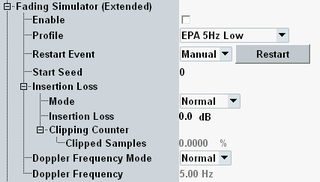

The node "Fading Simulator" enables and sets up the fading simulator. For background information, see "Fading Simulator".
There are two variants of the node. The extended fading variant provides more fading settings than the standard fading variant.

For most scenarios, extended fading is available. Standard fading applies if an I/Q board is used for fading and more than two DL TX antennas are used per carrier.
For carrier aggregation scenarios, you can configure all settings per component carrier.
Enables/disables the fading simulator.
Remote command:Selects a propagation condition profile.
- Delay profiles for low, medium and high delay spread environments:
– "Extended pedestrian A" model (EPA), maximum Doppler frequency 5 Hz – "Extended vehicular A" model (EVA), maximum Doppler frequency 5 Hz, 70 Hz or 200 Hz – "Extended typical urban" model (ETU), maximum Doppler frequency 30 Hz, 70 Hz or 300 Hz
All profiles are available with low, medium and high correlation level, relevant for MIMO scenarios.
The delay profiles are defined in 3GPP TS 36.101, annex B.2. - High-speed train (HST) scenario defined in 3GPP TS 36.101, annex B.3
- Multi-path profile used for CQI tests with parameter specifications of 3GPP TS 36.521-1, section 9.3 "CQI Reporting under fading conditions"
For standard fading, a subset is available: EPA and EVA with maximum Doppler frequency 5 Hz - low, medium and high correlation level.
Remote command:The scenario "1CC - Fading - 4x2" supports only the mode "Trigger". The other scenarios support only the modes "Auto" and "Manual".
"Auto" | Fading starts automatically with the downlink signal. |
"Manual" | Fading is started and restarted manually. A "Restart" button is displayed. |
"Trigger" | Fading starts automatically. The two I/Q boards are synchronized via an internal trigger signal. |
Sets the start seed for the pseudo-random fading algorithm. This setting ensures reproducible fading conditions.
Remote command:The insertion loss is the attenuation at the fader input. It can be calculated automatically or you can define it manually.
"Normal" | The insertion loss is calculated automatically, based on the currently selected "Profile". |
"User" | Specify the insertion loss value. A lower insertion loss allows for a higher downlink power but can result in clipping. You can use the displayed information "Clipped Samples" to find the lowest insertion loss value for which no clipping occurs. For scenarios with several output paths, the information is displayed per path. |
Plus corresponding PCC commands.
The maximum Doppler frequency can be calculated automatically or you can define it manually.
"Normal" | The maximum Doppler frequency is calculated automatically, based on the currently selected "Profile". |
"User" | Specify the maximum Doppler frequency. |